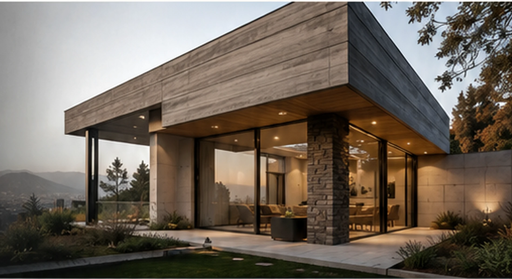
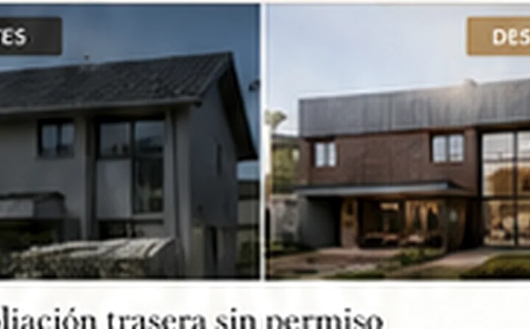
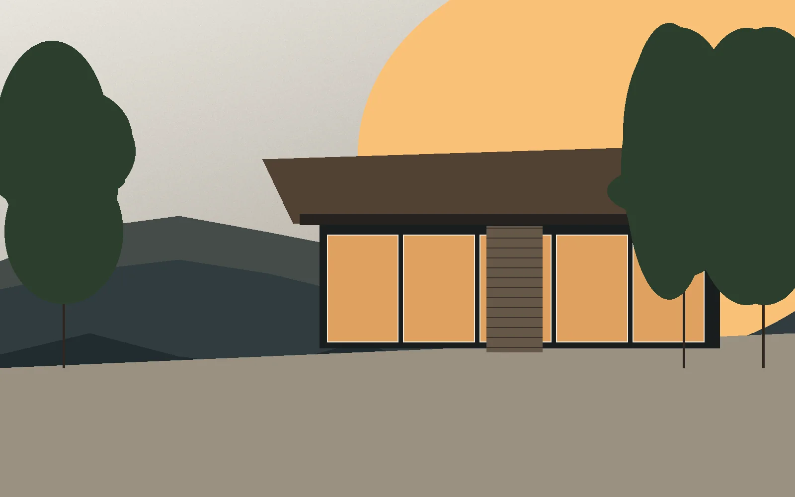
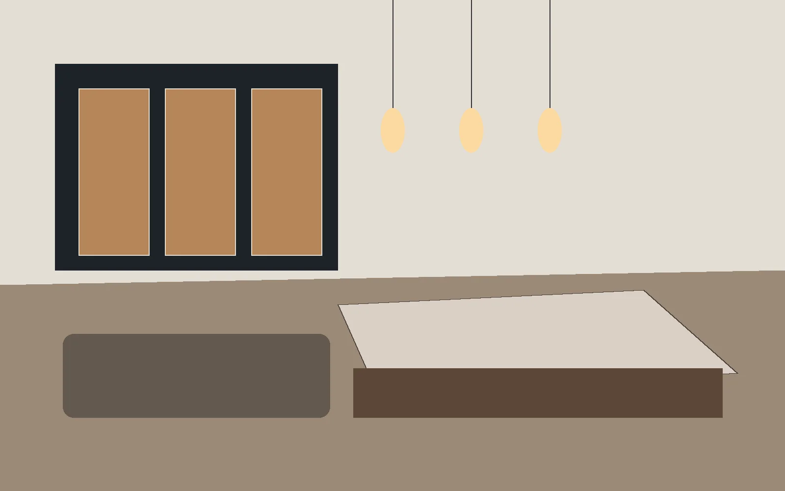
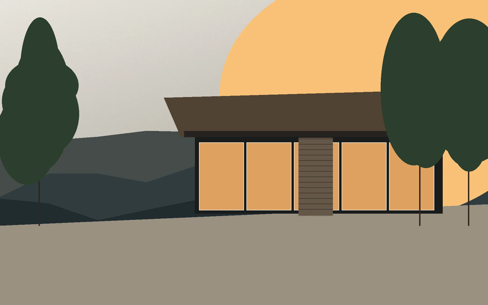
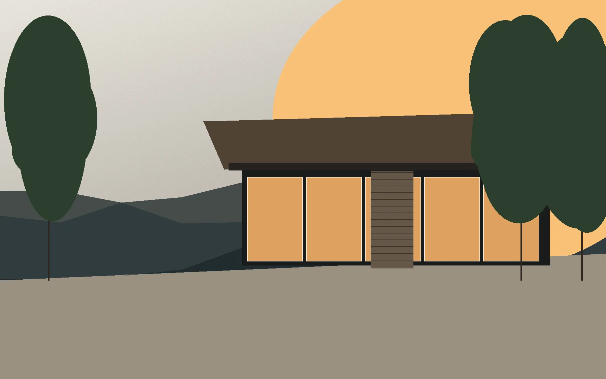
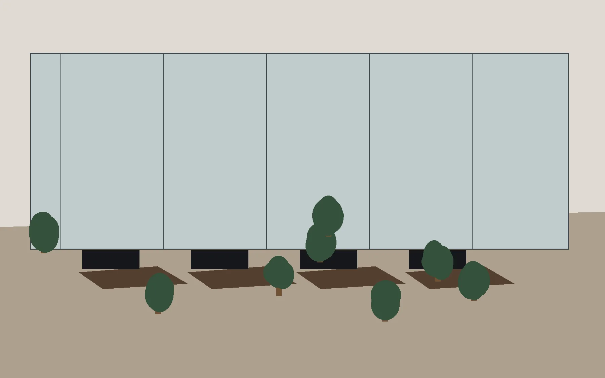
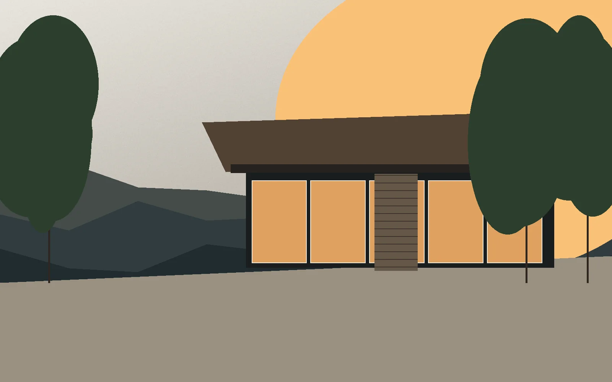

Diseño
Proyectos que responden a tus necesidades, entorno y presupuesto.

ARQUITECTURA · PERMISOS · REMODELACIONES
Diseñamos, regularizamos y desarrollamos proyectos para casas, departamentos, oficinas y locales comerciales, con criterio técnico, claridad de proceso y tramitación municipal ordenada.
DIAGNÓSTICO POR PROBLEMA
Partimos por el problema real: permiso, regularización, ampliación, remodelación, casa, oficina o local.
Necesito saber qué permiso corresponde y cómo tramitarlo.
Tengo una construcción existente y quiero ponerla al día.
Necesito cerrar administrativamente una obra o propiedad.
Quiero ganar metros con diseño, factibilidad y permisos.
Quiero transformar una casa o departamento sin improvisar.
Necesito desarrollar un proyecto desde cero o habilitar un espacio.
Quiero que revisen mi caso y me digan el camino correcto.
SERVICIOS
Gestionamos permisos de obra nueva, ampliaciones, modificaciones, cambios de destino y expedientes ante la DOM.
Revisar permisos →
Ordenamos ampliaciones y construcciones existentes para evaluar si pueden regularizarse y qué ruta conviene.
Evaluar regularización →Revisión documental y técnica para cerrar obras aprobadas, resolver observaciones y obtener recepción municipal.
Consultar recepción →
Evaluamos, diseñamos y tramitamos ampliaciones con criterio arquitectónico, estructural y normativo.
Evaluar ampliación →
Transformamos casas y departamentos con diseño, planificación, alcance claro y criterio técnico antes de ejecutar.
Cotizar remodelación →Proyectos a medida desde el terreno, la normativa, el presupuesto y la forma real de vivir.
Conversar sobre mi casa →Diseño, habilitación, permisos y recepción para espacios profesionales y comerciales listos para operar.
Evaluar espacio →Punto de partida recomendado
Revisamos tu caso, documentos y normativa aplicable. Te entregamos claridad sobre permisos, riesgos, factibilidad, costos referenciales y próximos pasos para decidir con seguridad.
PRUEBA / CRITERIO

Problema: Espacios oscuros y distribución poco eficiente.
Solución: Remodelación integral, apertura de espacios y mejor relación interior-exterior.
Resultado: Más luz, mejor funcionamiento y mayor valor de uso.
Ver caso →
Problema: Necesidad de crecer por cambios familiares sin perder coherencia arquitectónica.
Solución: Ampliación y reorganización del programa con criterio normativo.
Resultado: Más superficie útil y mejor funcionalidad diaria.
Ver caso →
Problema: Local sin habilitación adecuada para operar como clínica dental.
Solución: Proyecto, permisos y coordinación normativa para habilitar el espacio.
Resultado: Espacio operativo, regularizado y defendible ante terceros.
Ver caso →Problema: Permisos y antecedentes pendientes que limitaban el potencial comercial.
Solución: Regularización, ordenamiento técnico y criterio documental.
Resultado: Mayor tranquilidad legal y mejor capacidad de explotación.
Ver caso →PROCESO
Entendemos tu necesidad y revisamos tu caso.
Analizamos normativa, antecedentes y riesgos.
Definimos alcance, etapas y presupuesto.
Diseñamos y preparamos antecedentes.
Ingresamos, respondemos observaciones y hacemos seguimiento.
Cerramos la etapa y definimos el siguiente paso.
RECURSOS
Factores que influyen en el valor de un proyecto, desde diagnóstico hasta permiso y obra.
Leer guía →Guía rápida para identificar si corresponde obra menor, permiso de edificación o regularización.
Leer guía →
Pasos, documentos y riesgos frecuentes antes de iniciar una regularización.
Leer guía →Cómo estimar rangos de inversión según estándar, estructura, terreno y alcance.
Leer guía →DUDAS FRECUENTES
Depende de la comuna, el tipo de permiso, los antecedentes disponibles y la cantidad de observaciones. Por eso el primer paso es diagnosticar correctamente el caso.
Sí, en algunos casos. Hay que revisar superficies, distanciamientos, rasantes, normativa aplicable y antecedentes municipales.
Idealmente dirección, rol, planos existentes, CIP si existe, fotos, escritura o antecedentes de propiedad y una descripción clara de lo que necesitas resolver.
El Diagnóstico Arquitectónico Inicial parte desde $90.000 y permite ordenar permisos, riesgos, factibilidad y próximos pasos.
Trabajamos principalmente en Santiago, especialmente Las Condes, Lo Barnechea, Vitacura, Providencia, La Reina y Ñuñoa.
Dependiendo del caso, podemos acompañar coordinación, revisión de obra, decisiones técnicas y documentación.
PRÓXIMO PASO
Agenda una conversación y revisemos tu caso con criterio técnico, normativo y comercial.
